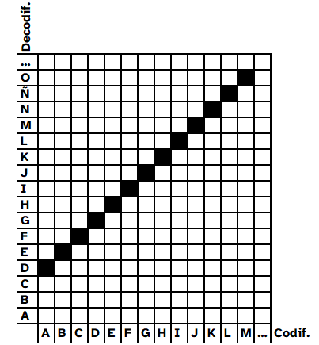
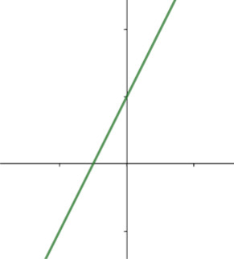
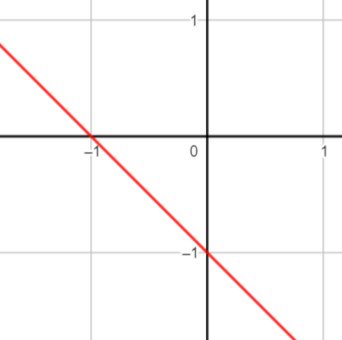
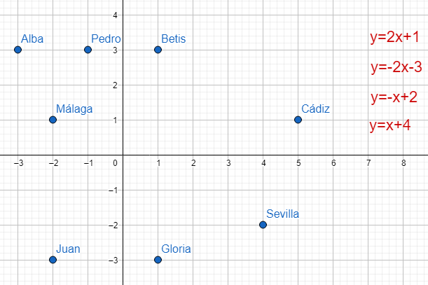
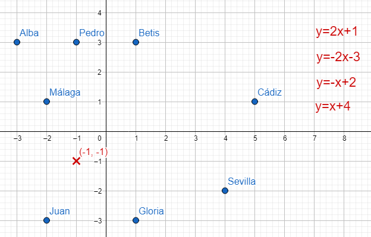
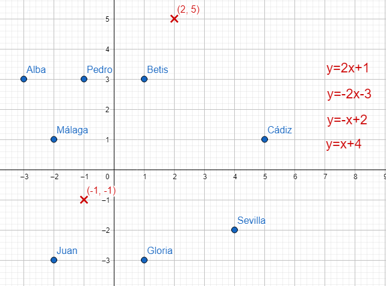
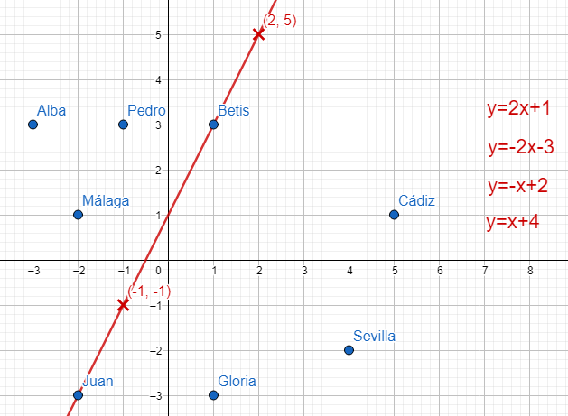

Diccionario
Posiciones

Definición:
Orientación con respecto a algo.
Ejemplo:
La policía nos pidió que le indicásemos nuestra posición.
Definición:
Orientación con respecto a algo.
Ejemplo:
La policía nos pidió que le indicásemos nuestra posición.

Has visto que Julio César codificaba sus mensajes cambiando cada letra por la que se encuentra tres posiciones después.
Pero igual podía haberla cambiado por la letra siguiente, o la que esta dos posiciones después, o cinco posiciones después.
Vamos a ver ahora cómo las Matemáticas puede ayudarnos a conocer mejor este tipo de relaciones.
Definición:
Orientación con respecto a algo.
Ejemplo:
La policía nos pidió que le indicásemos nuestra posición.
Si representas el código de Julio César en una cuadrícula como la que ya has usado anteriormente en otras actividades obtendrás los siguiente

Observa en la imagen de arriba como las marcas de la cuadrícula están todas alineadas.
Las funciones en las que todos sus puntos están alineados cuándo se representan gráficamente se llaman funciones lineales.


Estas funciones son uno a uno, porque cada número tiene una imagen distinta. Aprendamos un poco de estas funciones.
La expresión de una función lineal tiene la siguiente forma:
y=m·x+n
Es decir, hace corresponder a cada número x, el resultado de multiplicarlo por m y sumarle n.
En la siguiente construcción aparecerá una función lineal, puedes introducir valores para la x y ver que valor de la y le corresponde, además de la representación gráfica del punto obtenido (puedes reiniciar la construcción desde el botón de arriba a la derecha para comenzar de nuevo).
Has podido comprobar como la gráfica que se obtiene es siempre una recta.
En la siguiente construcción, introduce valores para n y comprueba que mensaje se esconde tras este número observando como afectan sus valores a la gráfica (puedes reiniciar la construcción desde el botón de arriba a la derecha para comenzar de nuevo):
Supongo que te habrá sido fácil comprobar como n oculta dónde nuestra recta va a cortar al eje de las y, también llamado de ordenadas. Por eso n tiene un nombre de espía que es: ordenada en el origen de la función lineal.
Ahora cambia el valor de m para encontrar ahora que oculta (puedes reiniciar la construcción desde el botón de arriba a la derecha para comenzar de nuevo):
Continúa dando valores y comprueba cómo:
Por todo esto a m, se le conoce entre los espías como pendiente de la función lineal, y oculta cuanto aumenta (si es positiva) o disminuye (si es negativa) la y cada vez que la x aumenta una unidad.
Las funciones lineales son aquellas en las que todos los puntos están alineados y están representados gráficamente.
Se expresa de la siguiente forma:
y=m·x+n
Es decir, hace corresponder a cada número x, el resultado de multiplicarlo por m y sumarle n.
 Es el momento de comprobar si conoces todos los secretos de las funciones lineales.
Es el momento de comprobar si conoces todos los secretos de las funciones lineales.
Como toda función podrás encontrar la información que ocultan en tablas, gráficas y expresiones.
Pero ahora, al menos, sabes que la gráfica será una línea recta, y conoces que esconden la pendiente y la ordenada en el origen.
La siguiente imagen oculta un mensaje secreto: ¿cuál es el equipo de fútbol preferido de mis amigos?

Vamos a intentar descifrarlo
Encontramos puntos en un plano y a la derecha funciones lineales....🤔🤔🤔... Sólo se me ocurre dibujar la gráfica de las funciones.
Empecemos con la primera
y=2x+1
Como sabemos que su gráfica es una recta, bastará con dos puntos para poder dibujarla.
Voy a elegir un valor para la x, por ejemplo x=-1, si cambiamos la x por -1 en la expresión algebraica obtendremos que valor de y ser relaciona con -1:
y=2·(-1)+1=-1
Por tanto -1 se relaciona con -1, y esto quiere decir que el punto (-1,-1) está en de la gráfica de y=2x+1.

Ahora voy a coger x=2, cambiando x por 2 y operando tenemos que
y=2·2+1=5
Y por tanto (2,5) es otro punto de la gráfica de y=2x+1

Pues, si ya tengo dos puntos de una recta, puedo dibujarla completa

Con lo que hemos descubierto que Juan es un seguidor del Real Betis Balompié.
¿Podrías ayudarme con los demás?
La recta que hemos dibujado pasa por el punto (0,1) y este punto podía haberlo sabido simplemente fijándome en que la ordenada en el origen vale 1.
¿Se te ocurren otras formas de descifrar el mensaje sin tener que dibujar?
Pon a prueba tus habilidades para descifrar los secretos de las funciones lineales.
Descubre la relación secreta entre gráficas, tablas y expresiones algebraicas de las funciones lineales ocultas.
Juan sale en bicicleta desde su casa y realiza un recorrido de dos horas circulando siempre a una velocidad de 20 km/h.
Si consideramos que la variable x es el tiempo transcurrido desde la salida y la variable y es la distancia a la que se encuentra de su casa.
Completa la tabla:
| x | y |
| 0 min | 0 km |
| 15 min | |
| 30 min | |
| 20 km | |
| 30 km | |
| 40 km |
Dibuja los datos de la gráfica anterior en una gráfica.
¿Qué tipo de función has obtenido? ¿Qué significado físico esconde la pendiente de la función?
Cuando tenemos que hacer alguna actividad podemos tener dudas sobre si seremos capaces de hacerlo.
Para poder vencer a estos miedos en las nuevas actividades que tengas que hacer sigue estos consejos:
1. Hay cosas que haces muy bien. Úsalas para hacer la actividad.
2. Hay cosas que te cuestan un poco hacerlas. Inténtalo y cree en ti mismo o en ti misma. Seguro que te sorprende lo que puedes conseguir.
3. Hay cosas que son muy difíciles. Fíjate en algún ejemplo, pregunta a tu compañero o compañera. Pide ayuda a tu profe.
Obra publicada con Licencia Creative Commons Reconocimiento Compartir igual 4.0
{kind=link}
{kind=link}